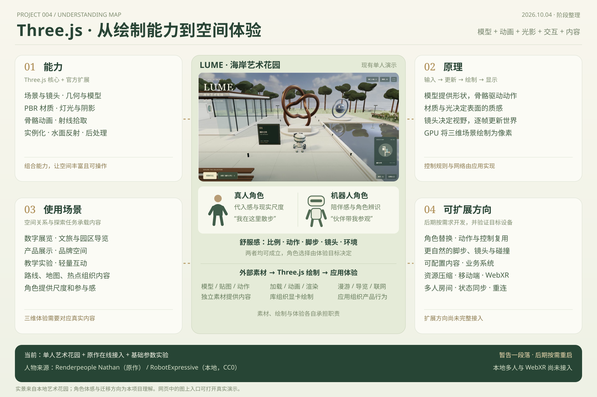

素材、绘制与体验一起工作
外部素材：人物模型、贴图、骨骼和动作。
Three.js：加载、动画计算、材质光照、镜头与 GPU 绘制。
应用代码：输入、碰撞、漫游、导览、内容导航与联网。
LUME · AN OPEN-AIR ART GARDEN
点击图中入口体验真实场景，或选择四个主题展开说明。人物与机器人都可成为空间的核心；角色、动作、镜头与环境共同决定体感。

外部素材：人物模型、贴图、骨骼和动作。
Three.js：加载、动画计算、材质光照、镜头与 GPU 绘制。
应用代码：输入、碰撞、漫游、导览、内容导航与联网。
真人更直观地提供现实尺度；机器人可以成为亲切的品牌角色和导览伙伴。舒服感来自比例、动作、脚步、镜头和环境的协调，选择应由体验目标决定。
原作公开代码标注 Renderpeople Nathan，加载 explorer-nathan.glb；本地使用 Tomás Laulhé / Quaternius 的 RobotExpressive（CC0），来自 Three.js 官方示例并调整配色。
本地已完成单人漫游、自动导览、展品热点、地图和画质分档。原作多人跨设备尚未验证；本地多人、WebXR、业务后台与复杂物理尚未接入。后期可从角色、内容或设备需求重新启动。
来源：Three.js r180 · 原作公开代码 · Renderpeople · RobotExpressive 说明。体感与迁移方向为本项目的体验判断。
海岸艺术花园
ART, LIGHT & A LITTLE TIME.准备导览角色、天空与材质…
点击画面 · WASD 行走 · Shift 奔跑 · 拖动看四周 · 滚轮调距离 · V 切换视角 · E 查看作品
正在准备场景。人物提供尺度，路线组织作品，热点承载说明。参观者可以跟随导览，也可以自己探索。
动画 glTF 导览员、HDR 天空、PBR 贴图、物理玻璃、真实水面反射、植被与柔和后期共同组成一个空间。
氛围塑造记忆，镜头帮助理解空间，展点连接内容，画质分级让不同设备都能进入。
画面与交互来自 Porto Lume 原站。
点击原作中的「Walk / Start walking」进入。WASD 移动 · Shift 奔跑 · V 切换人称 · Q 挥手 · Esc 暂停。先点击画面，让键盘进入原作。
在线嵌入原站，保留原有界面和功能；需要网络。房间连接由原站处理。
原作内部也可切换目的地，当前位置以原作地图为准。2026-10-03 检查：画面与单人交互正常；公共联机中继出现连接超时，多人连通性尚未验证。
原作加载时间较长，可能受网络或嵌入限制影响。可以重试，或在独立窗口体验。
把关键技术拆成可控制的变化。完整的本地应用在上方「海岸艺术花园」，参考作品在「Porto Lume 原作」。
原创程序化场景 · 真实 Three.js 渲染 · 无需账户 · 桌面键鼠 / 触屏方向键
FROM EFFECT TO USEFUL VALUE
效果 → 实现方式 → 可用价值 → 适用项目。
每一项都给出复用方向与投入判断。
它们可以先用于品牌页、数字展览和文旅导览。人物与多人体验，等项目需要真实漫游和共同在场时再投入。
保留氛围、镜头和关键互动，把产品介绍与行动入口放在清晰的二维界面里。
将地标、路线、热点与章节绑定，让探索承担内容导航的任务。
有共同参观、讲解或讨论需求，再接入房间、玩家状态与连接恢复。
效果描述来自原作界面与公开发布代码；应用价值为本项目的迁移判断，尚无转化率或跨设备多人实测数据。
LEARN BY CHANGING ONE THING
点击卡片，打开对应的本地参数实验。
先理解基础能力，再组合成自己的体验。
BEHIND THE SCENE
Three.js 负责三维绘制。
人物行为、场景规则和联机，来自应用代码。
输入 → 更新 → 绘制 → 显示，循环进行。
renderer.setAnimationLoop(() => {
updateMovement(); // 根据输入更新位置
updateAnimation(); // 让人物和水面动起来
renderer.render(scene, camera);
});模型定义形状，材质决定表面，灯光提供照明，镜头决定你看见哪里。浏览器通过 WebGL 把它们交给显卡，计算成屏幕上的像素。
阅读 Three.js 基础原理 ↗原站：Trystero + WebRTC 多人同步。
每个人的电脑各自绘制画面，网络只交换位置、朝向和动作等少量状态。接收方用插值补齐两次更新之间的运动，减少跳动。
阅读 Trystero 联机原理 ↗场景、模型、材质、灯光、镜头、动画、射线拾取。
键鼠控制、碰撞、世界切换、界面、热点和规则。
发现同房间用户、连接浏览器、同步玩家状态。
WHERE IT BELONGS
空间感、探索感、共同在场。
这三件事，是三维网页的价值。
适合虚拟展览、产品空间、文旅导览和轻量互动。表单、检索与高密度信息仍适合二维界面。真实项目还需要内容、业务功能与设备性能适配。
Porto Lume 组合了 Three.js 渲染、人物动画、世界规则与 Trystero 联机。本地海岸艺术花园把这些绘制与漫游能力用于数字展览，并保留原作在线接入和基础参数实验；本地展示为单人体验，联机图为教学模拟。